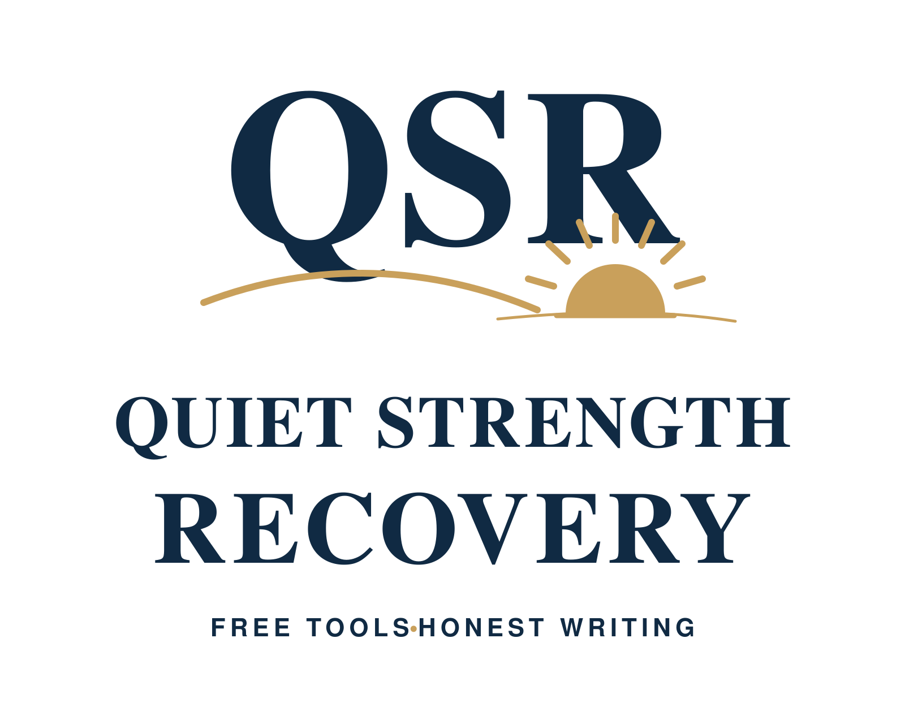

Personal recovery · Android v1.9
Quiet Strength Recovery
For adults working on their own recovery from addiction. Daily check-ins, private writing, reflections and practical tools for difficult moments.

QSRecovery · Free apps · Adults 18+
I'm Chris. I built these two apps from lived experience. One is for your own recovery. The other is for the people living alongside someone else's addiction. Take what helps, at your own pace.
Choose one or use both
Personal recovery · Android v1.9
For adults working on their own recovery from addiction. Daily check-ins, private writing, reflections and practical tools for difficult moments.
Partners, friends and family · Android v1.3
For adults affected by someone else's addiction, including men and women. Grounding, private reflections, boundaries and space for your own wellbeing.
Getting started
Choose “Open in your browser” above. The APK downloads are for Android. These pages do not provide an App Store download. Browser storage and installed-app storage are separate, so use encrypted backup and restore when moving your writing.
No. Both apps are free. There is no QSR subscription, signup or 14-day commitment. Use them at your own pace.
Tell me which app you used, your phone or browser, and what worked or needs fixing. Please leave out private journal entries, passcodes and personal health information. Email your feedback.
The signed Android builds are available for feedback; physical-device acceptance testing is still being completed.
Help someone find the tools
If somebody could benefit, send them this link: quietstrengthrecovery.co.uk/downloads/. It brings both free apps together in one place.
These are lived-experience peer-support and educational resources for adults aged 18 and over. They do not provide treatment, counselling, detoxification or emergency care. Read the app privacy information and choose what helps you.
Find urgent-support information